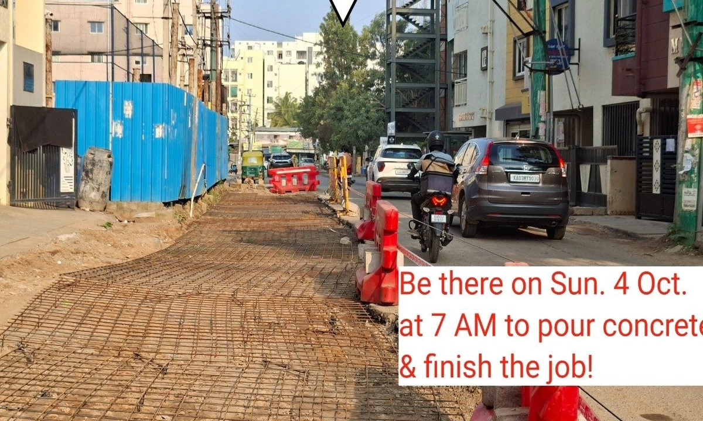
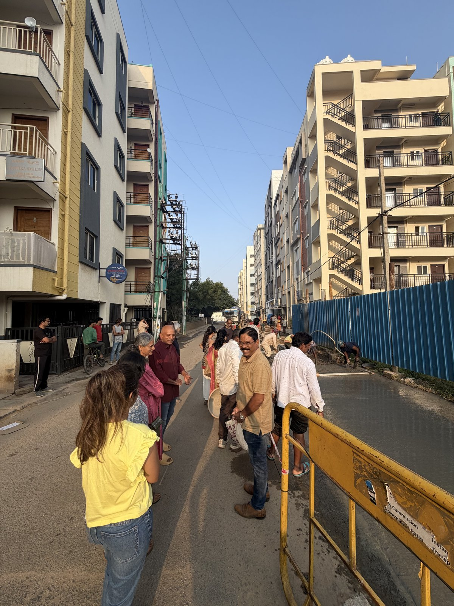
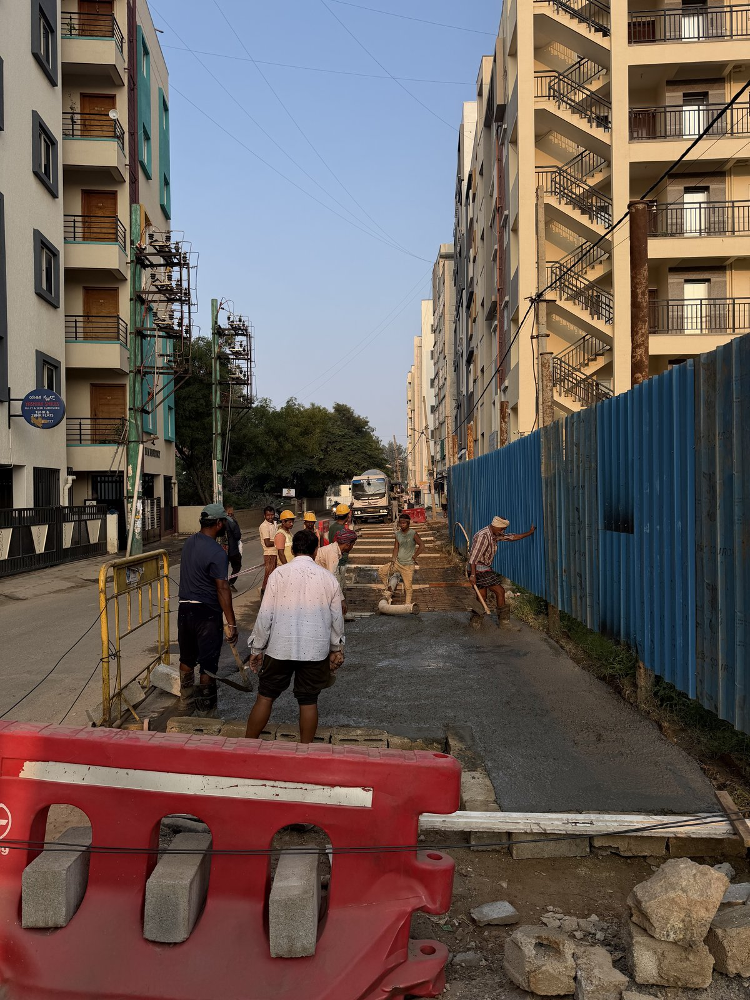
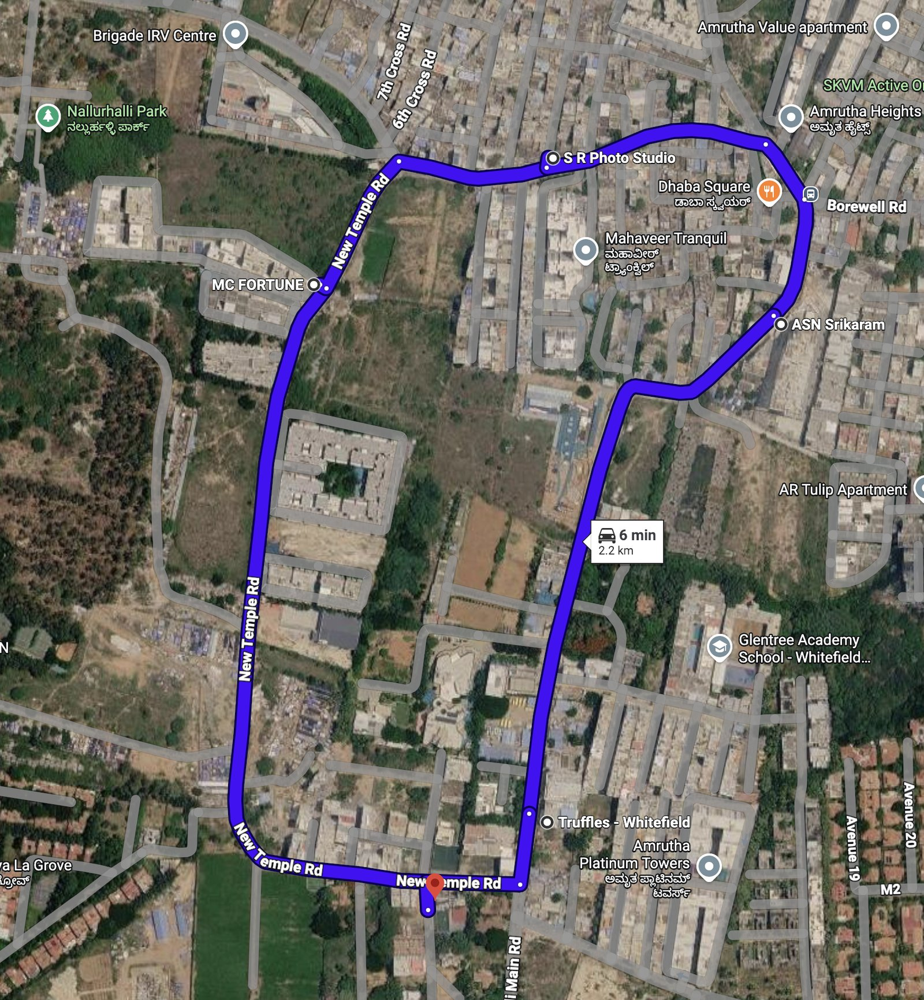

New Temple Road 2 km Loop
How citizens of Nallurahalli joined hands with Whitefield Rising to eliminate a notorious 40-metre bottleneck and create a seamless 2 km circulation loop connecting to Nallurhalli Metro.
The Problem: A 40-Metre 'Choke Point'
For years, commuters attempting to travel less than two kilometres to Nallurhalli Metro Station or ITPL faced severe traffic jams lasting 30 minutes to over an hour during morning and evening rush hours.
The root cause was a single 40-metre stretch on New Temple Road (near #15 New Temple Rd), where a stone parapet wall and temporary sheet barricades restricted the carriageway to virtually a single lane. Opposing cars could not pass, pedestrians and school children were forced onto the slushy edge, and emergency vehicles routinely found themselves gridlocked.
Rather than waiting endlessly for prolonged land acquisition disputes, Whitefield Rising and local residents engaged directly with the private landowner for nearly a year. The breakthrough: the owner generously consented to remove the barricade and allow public road use while retaining legal title to the property.
Before & After: 15 New Temple Road
Drag the slider left and right to compare the narrow single-lane bottleneck with the newly widened roadbed.

Now: Widened & PavedSunday Concreting: Community at Work
Watch the residents, volunteers, and technical crews in action on the morning of Sunday, October 4, 2026.
Live footage of concrete being poured on the 40-metre stretch at 15 New Temple Road.
On the Ground
From early morning preparation to final smooth finish, an all-hands-on-deck neighborhood effort.

Community Bucket Line
Leveling & Surface CuringThe 2.2 km Circulation Loop
The widened stretch enables a clockwise one-way traffic circulation plan designed to prevent head-on gridlocks between Varthur Road, Nallurhalli Main Road, and the Metro station.

Key Loop Waypoints
Head Start Montessori
Entry junction off Varthur Road & Siddapura Village link.
New Temple Road Entry
Passes MC Fortune and residential complexes.
40m Resolved Bottleneck
Site of the Oct 4 concreting, near #15 New Temple Road.
S R Photo Studio & 2nd Main
Turns right into 2nd Main Road toward Nallurahalli Main Road.
Dhaba Square / Borewell Jn
North-east corner connecting to Borewell Road and Amrutha Heights.
Siddapura Main Road
Southward return corridor passing Truffles & HP Petrol Station.
Project Timeline
How years of bottleneck frustration turned into citizen-led action and resolution.
Residents March for Road Infrastructure
Over 200 Siddapura and Nallurahalli residents march demanding functional roads, drainage, and pedestrian footpaths.
Read Bangalore Mirror report ↗Nallurhalli Metro Station Opens
Namma Metro Purple Line extension begins commercial operations. Traffic on feeder roads like New Temple Road surges drastically.
Stakeholder Dialogue & Urban Planning
Whitefield Rising and community leaders map bottleneck points, survey peak traffic volumes, and engage with the private owner of the 40m bottleneck.
Owner Agreement & ₹4 Lakhs Raised
The landowner graciously agrees to allow road expansion while keeping ownership. Residents crowdfund ₹4 Lakhs to purchase cement, steel, and machinery.
Community Concreting Day
From 7 AM onwards, dozens of volunteers, residents, and contractors pour reinforced concrete over the 40-metre stretch.
Read Times of India report ↗Hydration & Curing Phase
The stretch remains strictly barricaded for ~2 weeks to ensure concrete attains full compressive strength before vehicular load.
Loop Commissioning & Civic Handover
Opening of the continuous one-way loop; engagement with GBA / BBMP and traffic police for signage, pedestrian footpaths, and drain covers.
What's Next & Agency Roadmap
The citizen intervention solved the bottleneck. Here are the pending tasks and the responsible bodies.
| Item / Need | Lead Stakeholder | Current Status |
|---|---|---|
| Concrete curing & barricade maintenance | Nallurahalli Residents | Ongoing (until ~Oct 18) |
| Traffic signage & one-way regulation | Whitefield Traffic Police | Formal notification pending |
| BESCOM electrical pole shifting | BESCOM | Requested / Joint inspection |
| Stormwater drain (SWD) culverts & footpaths | GBA East City Corp / BBMP | Representation submitted |
Get Involved
Want to volunteer for the upcoming work day, stay updated on the loop opening, or connect with your neighbours? Join our WhatsApp community.
Join the WhatsApp Group